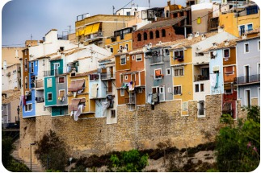

Saga & MenningMiðaldarstemming við Miðjarðarhafið
Borgin skartar af ólíkum einkennum sem hvert og eitt gefur henni mikið gildi. Fyrst ber að nefna Gamla bæinn en þar sést hvað best hin glæsilega byggingalist sem er einkennandi fyrir þessa gömlu fallegu borg. Í Gamla bænum er kjörið að gæða sér á mat og drykk í afslöppuðu umhverfi, eða einfaldlega tylla sér á bekk og virða fyrir sér mannlífið á sólríkri stund.